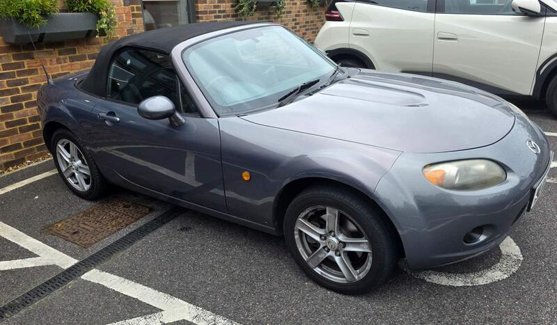
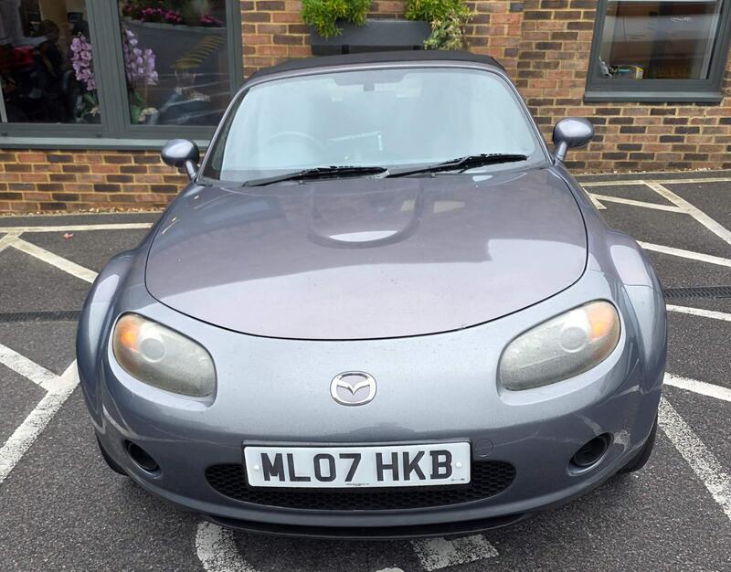
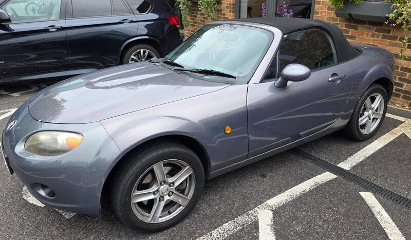
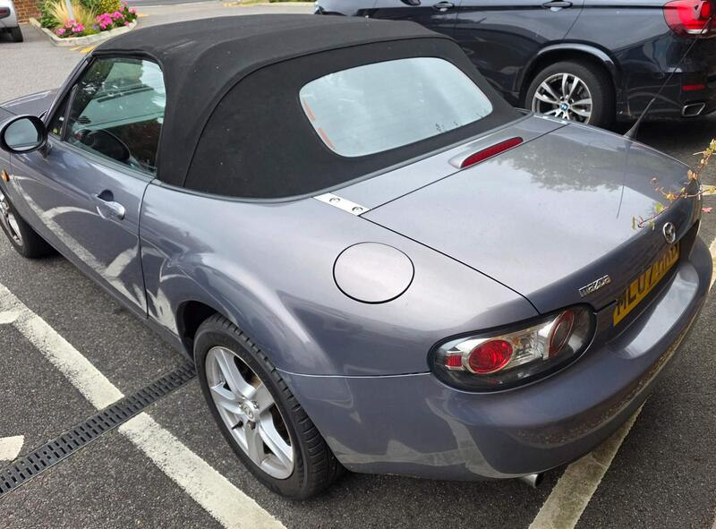

Seller photos from the AutoTrader ad.
Mazda MX-5 1.8i
An honest private NC. Get the ABS fixed before you buy.
Key facts
| Price | £2,499 |
|---|---|
| Year | 2007 |
| Miles | 88,335 |
| Model | Mazda MX-5 1.8i |
| Colour | Grey |
| Registration | 2007 (07 reg) |
| Owners | 3 owners |
| Service history | Not stated |
| MOT | Not stated |
| Seller | Private |
| Location | Worcester Park |
| From GU7 | 22 mi (AutoTrader) |
| Checked | 13 Oct 2026 |
Why buy it
- 2 owners, no rust or leaks (ad)
- Full service history while owned, new gearbox (ad)
Things to check
ABS light on (a fox chewed the wire). The seller has a quote and offers to fix it (ad)
Windscreen crack, mismatched bumper (ad)
- Mazda MX-5 NC / NB weak spots
Rear subframe, rear arches and sill ends; NB sills and chassis rails. Underseal can hide rot. Engine mostly bulletproof; timing-chain tensioner, seizing calipers, rear diff leaks, cracking coolant tank.
Seller says (extract)
“2 owners, 2 keys. 88k miles, no rust, no leaks. The body work does have some scratches and the front bumper colour is mismatched, there is a small crack in the windscreen all these issues were present when I first got the car in 08/2024. The ABS light is on as the front passenger side abs wire was chewed through by a fox, I have a quote to fix and happy to do get it fixed prior to buyer collection. That's all the negatives out of the way, now for the positives. I have owned this car for 2 years and 2 months. Since then it had had 1 major service, 1 full service, 2 minor services, a new gearbox, an upgraded lightweight clutch, K & N air filter upgrade, the coolant tank has been upgraded to an aluminium one (these cars are prone to the original coolant tank exploding, so this was a preemptive fix) LED headlights, running lights are still halogen, all speakers have been upgraded to 160W Hertz and sounds incredible. Android Auto / Apple carplay head unit, dash mounted, also has a built in dashcam. I have only ever used Shell V-power 99 octane fuel since owning the car, I have endless receipts for this as you can see from the photos. It has recently had a set of new Michelin Pilot sport 5 tyres on both rears. Has no signs of rust, also has no leaks in the soft top, I have used soft top cleaner and waterproofing every so often. Priced to sell, as I am upgrading to a bigger car and only have 1 parking space in our garage, car has been garage kept every night, and covered in the winter (to keep foxes off) I am open to reasonable offers. Car will be detailed inside and out prior to collection.…”